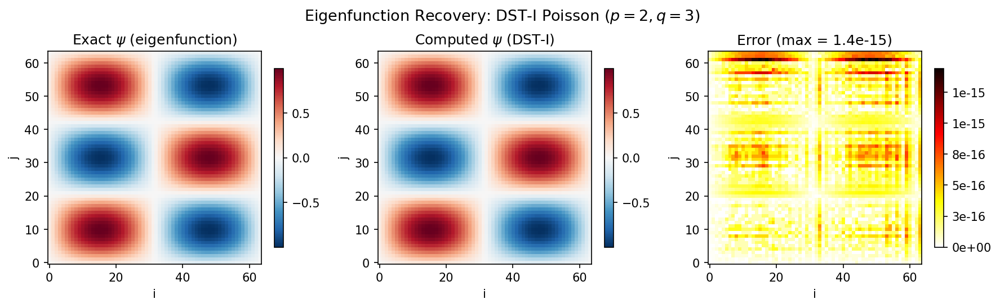
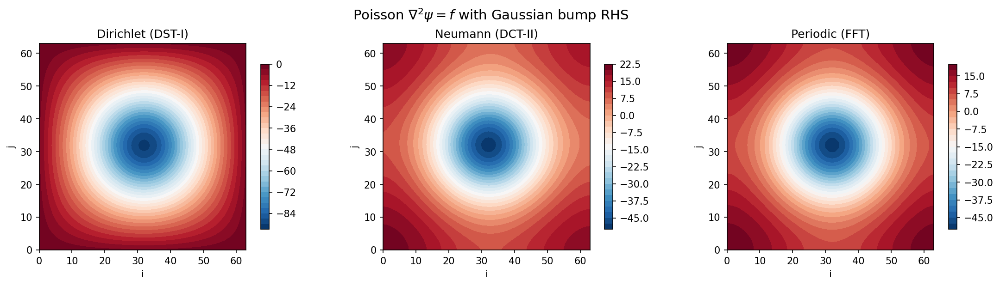

Spectral Elliptic Solvers¶
Spectral elliptic solvers exploit the fact that spectral transforms (DST, DCT, FFT) diagonalise the discrete Laplacian, reducing a PDE solve to a pointwise division in spectral space. This page covers the Helmholtz, Poisson, and Laplace equations on rectangular domains with Dirichlet, Neumann, and periodic boundary conditions.
The key advantage is cost: the entire solve runs in \(O(N_y N_x \log(N_y N_x))\) time, dominated by two transforms. The spectral division itself is \(O(N_y N_x)\).
1. The Helmholtz Equation¶
The Helmholtz equation on a rectangular domain \(\Omega = [0, L_x] \times [0, L_y]\) is:
where \(\nabla^2 = \partial^2/\partial x^2 + \partial^2/\partial y^2\) is the Laplacian, \(\lambda \geq 0\) is the Helmholtz parameter, and \(f\) is a known source term.
Special Cases¶
| Case | Condition | Equation |
|---|---|---|
| Poisson | \(\lambda = 0\) | \(\nabla^2 \psi = f\) |
| Laplace | \(\lambda = 0\), \(f = 0\) | \(\nabla^2 \psi = 0\) |
| Screened Poisson | \(\lambda > 0\) | \((\nabla^2 - \lambda)\,\psi = f\) |
Physical applications
- Streamfunction from vorticity: \(\nabla^2 \psi = \omega\) (Poisson)
- Pressure correction: \(\nabla^2 p = \nabla \cdot \mathbf{u}^*\) in projection methods
- QG potential vorticity inversion: \((\nabla^2 - F)\,\psi = q\)
- Shallow water models: Helmholtz problems arise after implicit treatment of gravity waves
The Discrete 5-Point Laplacian¶
On a 2-D grid with \(N_y \times N_x\) points and spacings \(\Delta x\), \(\Delta y\), the second-order finite-difference Laplacian is the 5-point stencil:
This operator is a sparse \(N_y N_x \times N_y N_x\) matrix. Direct inversion would be \(O(N^3)\) or \(O(N^2)\) with banded solvers. The spectral approach diagonalises it analytically, reducing the solve to \(O(N \log N)\).
2. The Spectral Solve Algorithm¶
All three BC types (Dirichlet, Neumann, periodic) share the same four-step structure. Only the choice of transform \(\mathcal{T}\) and the eigenvalue formula change.
Algorithm:
- Forward transform: \(\hat{f} = \mathcal{T}(f)\) -- shape \([N_y, N_x]\)
- Build eigenvalue matrix: \(\Lambda_{j,i} = \lambda_j^y + \lambda_i^x - \lambda\) -- shape \([N_y, N_x]\)
- Spectral division: \(\hat{\psi}_{j,i} = \hat{f}_{j,i}\;/\;\Lambda_{j,i}\) -- shape \([N_y, N_x]\)
- Inverse transform: \(\psi = \mathcal{T}^{-1}(\hat{\psi})\) -- shape \([N_y, N_x]\)
where \(\mathcal{T}\) is one of:
| BC type | Grid | Transform \(\mathcal{T}\) |
|---|---|---|
| Dirichlet (\(\psi = 0\)) | Regular (vertex) | DST-I |
| Dirichlet (\(\psi = 0\)) | Staggered (cell) | DST-II |
| Neumann (\(\partial\psi/\partial n = 0\)) | Regular (vertex) | DCT-I |
| Neumann (\(\partial\psi/\partial n = 0\)) | Staggered (cell) | DCT-II |
| Periodic | Either | FFT |
Why this works
The spectral transform \(\mathcal{T}\) diagonalises the discrete Laplacian \(L_h\), meaning \(\mathcal{T} \, L_h \, \mathcal{T}^{-1} = \text{diag}(\lambda_0, \lambda_1, \ldots)\). The PDE \(L_h \psi = f\) becomes \(\hat{\psi}_k = \hat{f}_k / \lambda_k\) in spectral space -- a pointwise division instead of a matrix solve.
Complexity: \(O(N_y N_x \log(N_y N_x))\), dominated by the two transforms. The spectral division is \(O(N_y N_x)\).
3. Dirichlet BCs -- DST-I Solver¶
Boundary Conditions¶
The sine transform is the natural basis: \(\sin(k\pi x / L)\) vanishes at \(x = 0\) and \(x = L\).
Transform¶
The DST-I (Discrete Sine Transform, Type I) is applied in both directions:
Eigenvalues¶
The 1-D eigenvalues of the discrete Laplacian under Dirichlet BCs are:
where \(N\) is the number of interior grid points (the two boundary points with \(\psi = 0\) are excluded).
The 2-D eigenvalue matrix is:
Properties¶
- All eigenvalues are strictly negative (\(\lambda_k < 0\) for all \(k\)). The discrete Dirichlet Laplacian is negative definite.
- No null mode: the denominator \(\Lambda_{j,i}\) is always nonzero for \(\lambda \geq 0\), so no special treatment is needed.
- The input
rhslives on the \(N_y \times N_x\) interior grid; boundary values are implicit zeros.

API¶
# Layer 0 — pure functions
psi = solve_helmholtz_dst(rhs, dx, dy, lambda_)
psi = solve_poisson_dst(rhs, dx, dy)
# Layer 1 — module class
solver = DirichletHelmholtzSolver2D(dx=1.0, dy=1.0, alpha=0.0)
psi = solver(rhs)
3a. Dirichlet BCs, Staggered Grid -- DST-II Solver¶
Grid Type¶
On a staggered (cell-centred) grid, the grid points sit at cell centres. The Dirichlet boundary (\(\psi = 0\)) is located half a grid spacing outside the first and last grid points.
This is the standard setup for pressure correction in incompressible flow solvers using the projection method, where the pressure lives on a cell-centred grid with the velocity at cell faces.
Transform¶
The DST-II is applied in both directions:
The inverse is the DST-III (SciPy convention: idstn(type=2) automatically applies DST-III).
Eigenvalues¶
Properties¶
- All eigenvalues are strictly negative — no null mode, no special treatment needed.
- The eigenvalues differ from DST-I: the denominator is \(2N\) (not \(2(N+1)\)), reflecting the different grid point count.
- Eigenfunctions: \(\sin\!\bigl(\pi(k+1)(2n+1)/(2N)\bigr)\)
API¶
# Layer 0 — pure functions
psi = solve_helmholtz_dst2(rhs, dx, dy, lambda_)
psi = solve_poisson_dst2(rhs, dx, dy)
# Layer 1 — module class
solver = StaggeredDirichletHelmholtzSolver2D(dx=1.0, dy=1.0, alpha=0.0)
psi = solver(rhs)
4. Neumann BCs -- DCT-II Solver¶
Boundary Conditions¶
The cosine transform is the natural basis: \(\cos(k\pi x / L)\) has zero slope at \(x = 0\) and \(x = L\).
Transform¶
The DCT-II (Discrete Cosine Transform, Type II) is applied in both directions:
Eigenvalues¶
The 1-D eigenvalues of the discrete Laplacian under Neumann BCs are:
The 2-D eigenvalue matrix is:
The Null Mode¶
The \(k = 0\) eigenvalue is exactly zero: \(\lambda_0^{\text{DCT}} = 0\). This corresponds to the constant mode of the Neumann Laplacian -- adding a constant to \(\psi\) does not change \(\nabla^2 \psi\).
- Poisson (\(\lambda = 0\)): \(\Lambda_{0,0} = 0\), so the system is singular. The fix is the zero-mean gauge: set \(\hat{\psi}_{0,0} = 0\), which enforces \(\overline{\psi} = 0\).
- Helmholtz (\(\lambda \neq 0\)): \(\Lambda_{0,0} = -\lambda \neq 0\), so the system is non-singular -- no special treatment needed.
Compatibility condition
For the Neumann Poisson equation (\(\lambda = 0\)), the source term \(f\) must satisfy \(\sum_{j,i} f_{j,i} = 0\) (discrete compatibility condition). If this is violated, the zero-mean gauge still produces a solution, but it is the least-squares best fit rather than an exact solution.
API¶
# Layer 0 — pure functions
psi = solve_helmholtz_dct(rhs, dx, dy, lambda_)
psi = solve_poisson_dct(rhs, dx, dy)
# Layer 1 — module class
solver = NeumannHelmholtzSolver2D(dx=1.0, dy=1.0, alpha=0.0)
psi = solver(rhs)
4a. Neumann BCs, Regular Grid -- DCT-I Solver¶
Grid Type¶
On a regular (vertex-centred) grid, the first and last grid points coincide with the domain boundary. The Neumann condition (\(\partial\psi/\partial n = 0\)) is enforced at these boundary points directly.
Transform¶
The DCT-I is applied in both directions:
The DCT-I is self-inverse (up to normalisation).
Eigenvalues¶
Null Mode¶
Same as DCT-II: \(\lambda_0 = 0\), handled by the zero-mean gauge (\(\hat{\psi}_{0,0} = 0\)).
API¶
# Layer 0 — pure functions
psi = solve_helmholtz_dct1(rhs, dx, dy, lambda_)
psi = solve_poisson_dct1(rhs, dx, dy)
# Layer 1 — module class
solver = RegularNeumannHelmholtzSolver2D(dx=1.0, dy=1.0, alpha=0.0)
psi = solver(rhs)
5. Periodic BCs -- FFT Solver¶
Boundary Conditions¶
The complex exponential \(e^{2\pi i k x / L}\) is the natural basis for periodic domains.
Transform¶
The 2-D FFT is applied:
Eigenvalues¶
The 1-D eigenvalues of the discrete Laplacian under periodic BCs are:
The 2-D eigenvalue matrix is:
Null-Mode Handling¶
Same as Neumann: the \(k = 0\) mode has \(\lambda_0^{\text{FFT}} = 0\), so the Poisson problem (\(\lambda = 0\)) is singular at \((0, 0)\). The zero-mean gauge \(\hat{\psi}_{0,0} = 0\) removes the singularity.
1-D Variants¶
The periodic solver is also available in 1-D:
Continuous-Wavenumber Alternative¶
The Layer 1 classes SpectralHelmholtzSolver1D, SpectralHelmholtzSolver2D, and SpectralHelmholtzSolver3D use continuous Fourier wavenumbers \(k = 2\pi m / L\) instead of discrete finite-difference eigenvalues. The spectral division becomes:
where \(|\mathbf{k}|^2 = k_x^2 + k_y^2\) (+ \(k_z^2\) in 3-D). This is the exact inverse of the continuous Laplacian rather than the 5-point stencil, and is preferred when working within a fully spectral discretisation.
API¶
# Layer 0 — pure functions (discrete eigenvalues)
psi = solve_helmholtz_fft(rhs, dx, dy, lambda_)
psi = solve_poisson_fft(rhs, dx, dy)
# Layer 1 — module classes (continuous wavenumbers)
solver = SpectralHelmholtzSolver2D(grid=grid)
psi = solver.solve(f, alpha=0.0, zero_mean=True)
6. Null-Mode Handling (Zero-Mean Gauge)¶
For Neumann and periodic BCs, the \((0,0)\) spectral mode has zero eigenvalue. This section summarises the handling across all cases.
| Scenario | \(\Lambda_{0,0}\) | Singular? | Treatment |
|---|---|---|---|
| Dirichlet, any \(\lambda \geq 0\) | \(\lambda_0^y + \lambda_0^x - \lambda < 0\) | No | None needed |
| Neumann/Periodic, \(\lambda > 0\) | \(-\lambda \neq 0\) | No | Automatically handled |
| Neumann/Periodic, \(\lambda = 0\) | \(0\) | Yes | Set \(\hat{\psi}_{0,0} = 0\) |
Physical meaning: the null mode corresponds to the freedom to add an arbitrary constant to \(\psi\) without affecting \(\nabla^2 \psi\). The zero-mean gauge pins this constant by enforcing \(\overline{\psi} = 0\).
JIT-Safe Implementation¶
The null-mode fix must be compatible with JAX's jit and vmap transformations. The implementation uses a conditional safe-division pattern:
is_null = (denom == 0.0)
denom_safe = jnp.where(is_null, 1.0, denom) # avoid 0/0
psi_hat = rhs_hat / denom_safe
psi_hat = jnp.where(is_null, 0.0, psi_hat) # zero the null mode
This avoids Python-level if statements, keeping the computation traceable by JAX.
Why not just clip the denominator?
A common alternative is denom = jnp.maximum(denom, eps). This avoids division by zero
but introduces an \(O(1/\varepsilon)\) error in the null mode. The jnp.where approach is
exact and has no tunable parameter.
7. Layer 0 vs Layer 1 API¶
SpectralDiffX provides two levels of abstraction for elliptic solvers.
Layer 0: Pure Functions¶
Pure functions that take arrays and grid spacings directly. They use discrete finite-difference eigenvalues and are the exact inverse of the 5-point stencil Laplacian.
from spectraldiffx import solve_helmholtz_dst, solve_poisson_fft
# Dirichlet Poisson solve
psi = solve_poisson_dst(rhs, dx=0.1, dy=0.1)
# Helmholtz with periodic BCs
psi = solve_helmholtz_fft(rhs, dx=0.1, dy=0.1, lambda_=1.0)
Characteristics:
- No grid object required -- just arrays and floats
- Fully compatible with
jax.jit,jax.vmap, andjax.grad - Easy to vmap over parameters (e.g., sweep over \(\lambda\))
- Ideal for composition inside custom solvers or time-stepping loops
Layer 1: Module Classes¶
eqx.Module wrappers that store solver parameters as pytree leaves. Callable or expose a .solve() method.
from spectraldiffx import DirichletHelmholtzSolver2D, SpectralHelmholtzSolver2D
# DST-based Dirichlet solver (discrete eigenvalues)
solver = DirichletHelmholtzSolver2D(dx=0.1, dy=0.1, alpha=0.0)
psi = solver(rhs)
# FFT-based periodic solver (continuous wavenumbers)
solver = SpectralHelmholtzSolver2D(grid=grid)
psi = solver.solve(f, alpha=0.0, zero_mean=True, spectral=False)
Characteristics:
- Store parameters once, call repeatedly
- The DST/DCT classes (
DirichletHelmholtzSolver2D,NeumannHelmholtzSolver2D) use discrete eigenvalues - The FFT classes (
SpectralHelmholtzSolver1D/2D/3D) use continuous wavenumbers fromFourierGridand accept extra options (zero_mean,spectral) - Ideal as reusable components inside larger models
When to Use Which¶
| Use case | Recommended layer |
|---|---|
| Quick one-off solve | Layer 0 |
| Vmap over \(\lambda\) or grid spacings | Layer 0 |
Reusable solver inside an eqx.Module model |
Layer 1 |
| Fully spectral discretisation (continuous \(k\)) | Layer 1 (FFT classes) |
| Finite-difference discretisation (5-point stencil) | Layer 0 or Layer 1 (DST/DCT classes) |
8. 1-D and 3-D Solvers¶
The same spectral solve algorithm extends directly to 1-D and 3-D. In 3-D, the eigenvalue tensor is the outer sum of three 1-D eigenvalue vectors:
All five BC types (periodic, Dirichlet regular, Dirichlet staggered, Neumann regular, Neumann staggered) have 1-D, 2-D, and 3-D solver variants. The naming convention is:
- 1-D:
solve_helmholtz_{type}_1d(e.g.,solve_helmholtz_dst1_1d) - 2-D:
solve_helmholtz_{type}(e.g.,solve_helmholtz_dst) - 3-D:
solve_helmholtz_{type}_3d(e.g.,solve_helmholtz_dst1_3d)
9. Summary Table¶
| BC Type | Grid | Transform | Null mode? | Layer 0 (2D) | Layer 1 Class |
|---|---|---|---|---|---|
| Dirichlet | Regular | DST-I | No | solve_helmholtz_dst |
DirichletHelmholtzSolver2D |
| Dirichlet | Staggered | DST-II | No | solve_helmholtz_dst2 |
StaggeredDirichletHelmholtzSolver2D |
| Neumann | Regular | DCT-I | Yes (\(k=0\)) | solve_helmholtz_dct1 |
RegularNeumannHelmholtzSolver2D |
| Neumann | Staggered | DCT-II | Yes (\(k=0\)) | solve_helmholtz_dct |
NeumannHelmholtzSolver2D |
| Periodic | Either | FFT | Yes (\(k=0\)) | solve_helmholtz_fft |
SpectralHelmholtzSolver2D |
Backwards-compatible aliases
The original names are preserved as aliases:
solve_helmholtz_dst = solve_helmholtz_dst1 (Dirichlet, regular) and
solve_helmholtz_dct = solve_helmholtz_dct2 (Neumann, staggered).

10. References¶
- G. Strang, "The Discrete Cosine Transform," SIAM Review, 41(1), 1999.
- G. H. Golub and C. F. Van Loan, Matrix Computations, 4th edition, Johns Hopkins University Press, 2013.
- D. R. Durran, Numerical Methods for Fluid Dynamics: With Applications to Geophysics, 2nd edition, Springer, 2010.
- S. A. Orszag, "On the Elimination of Aliasing in Finite-Difference Schemes by Filtering High-Wavenumber Components," Journal of the Atmospheric Sciences, 28, 1971.